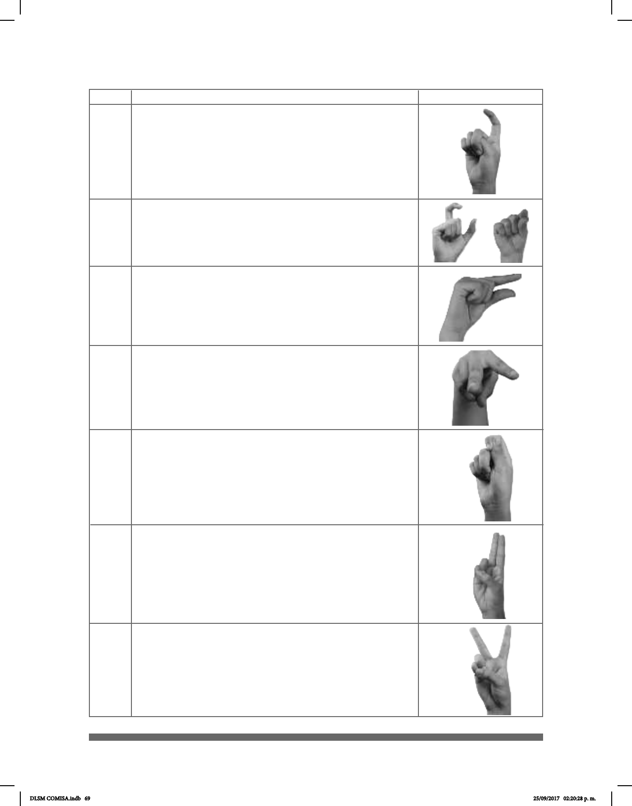

69
CL USO Y SIGNIFICADO IMAGEN
L
L
• Supercie estrecha o ancha.
• Objetos circulares, como las monedas.
...
^
• Una persona que se desplaza sobre sus piernas.
Las puntas de los dedos se orientan hacia el piso.
N
L
• Entidades nas y pequeñas: clips, tachuelas
animales voladores.
#
• Representa la forma de sujetar objetos como
cepillos de dientes, lápices, martillos, pluma,
pincel.
#
T
U
• Utensilios como pinceles, cuchillos o navajas.
• Silla
• Tijeras.v
DLSM COMISA.indb 69 25/09/2017 02:20:28 p. m.